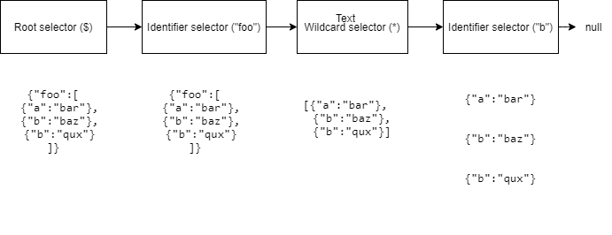
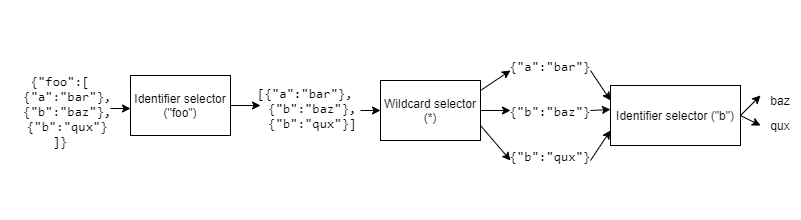

JsonCons JSONPath
JSONPath is a loosely standardized syntax for querying JSON. There are many implementations and they differ in significant ways, see Christoph Burgmer's JSONPath comparison.
The JsonCons implementation is described in an ABNF grammar (in progress.) It explicitly implements a state machine that corresponds to this grammar.
The JsonCons implementation differs from Stefan Goessner's original JavaScript implementation in the following respects:
Stefan Goessner's implemention returns
falsein case of no match, but in a note he suggests an alternative is to return an empty array. TheJsonConsimplementation returns an empty array in case of no match.Names in the dot notation may be unquoted (no spaces), single-quoted, or double-quoted.
Names in the square bracket notation may be single-quoted or double-quoted.
Wildcards are allowed in the dot notation
Unions of separate JSONPath expressions are allowed, e.g.
$..[@.firstName,@.address.city]
Fiter expressions, e.g.
$..book[?(@.price<10)], may omit the enclosing parentheses, like so$..book[?@.price<10].A parent operator
^provides access to the parent node.Options are provided to exclude results corresponding to duplicate paths, and to sort results according to paths.
Paths
JSONPath uses paths to select values. It is a feature of JSONPath that it selects values in the original JSON document, and does not create JSON elements that are not in the original.
| Selector | Description |
|---|---|
$ |
Represents the root JSON value |
@ |
Represents the value currently being processed |
.<name> or .'<name>' or ."<name>" |
The '.' character followed by a JSON object member name, unquoted or quoted |
['<name>'] or ["<name>"] |
Subscript operator with quoted JSON object member name |
[<index>] |
Index expression used to access elements in a JSON array. A negative index value indicates that indexing is relative to the end of the array. |
* or ['*'] |
Wildcard. All objects/elements regardless their names. |
[start:stop:step] |
Array slice notation, following Python |
^ |
Parent operator borrowed from JSONPath Plus |
.. |
Recursive descent |
[,] |
Union operator for alternative object names or array indices or JSONPath expressions |
?<expr> |
Filter by expression |
Paths can use the dot-notation or the bracket-notation.
Select the first (indexed 0) book in Stefan Goessner's store using the dot notation:
$.store.book[0]
or
$.'store'.'book'[0]
or
$."store"."book"[0]
Unquoted names in the dot notation are restricted to digits 0-9, letters A-Z and a-z, the underscore character _, and unicode coded characters that are non-ascii. Note that names with hyphens must be quoted.
Select the first (indexed 0) book using the bracket-notation:
$['store']['book'][0]
or
$["store"]["book"][0]
Recursively select all book titles under '$.store':
$.'store'..'title'
Union of a subset of books identified by index:
$.store[@.book[0],@.book[1],@.book[3]]
Union of the fourth book and all books with price > 10:
$.store[@.book[3],@.book[?(@.price > 10)]]
Selectors
After tokenization, a JSONPath string is transformed into a null terminated linked list of selectors. There are ten different kinds of selectors:
Root selector ($)
Current node selector (@)
Parent node selector (^)
Identifier selector
Index selector
Slice selector
Recursive descent selector (..)
Wildcard selector (*)
Union selector
Filter selector
When executing a JSONPath query against a JSON value, the list of selectors is applied to the value to produce a result set of selected items. This works as follows:
- Provide the value to the selector at the head of the list
- This selector will select zero or more items from the provided value, and, for each item, provide the item to its tail.
- This proceeds recursively until the tail is null. The last selector in the list will add its provided value to the result set.
Note that only the last selector in the list adds to the result set.
Consider the JSON document
{"foo":[
{"a":"bar"},
{"b":"baz"},
{"b":"qux"}
]}
and JSONPath
$.foo[*].b
After tokenization, the JSONPath becomes

Execution proceeds as follows:

The final result is
["baz","qux"]
Root and current node
The symbol '$' represents the root JSON value, the JSON document to be evaluated. The symbol '@' represents the "current node". At the start of an expression, the current node is the document to be evaluated, and as the expression is evaluated, it changes to reflect the node currently being processed.
Parent selector
Consider the JSON document
[
{
"author" : "Haruki Murakami",
"title": "A Wild Sheep Chase",
"reviews": [{"rating": 4, "reviewer": "Nan"}]
},
{
"author" : "Sergei Lukyanenko",
"title": "The Night Watch",
"reviews": [{"rating": 5, "reviewer": "Alan"},
{"rating": 3,"reviewer": "Anne"}]
},
{
"author" : "Graham Greene",
"title": "The Comedians",
"reviews": [{"rating": 4, "reviewer": "Lisa"},
{"rating": 5, "reviewer": "Robert"}]
}
]
JsonCons supports the parent selector, ^, borrowed from JSONPath Plus,
that allows you to select book objects based on criteria applied to descendent values.
| Query | Output paths |
|---|---|
$[*]reviews[?(@.rating == 5)] |
"$[1]['reviews'][0]" |
| "$[2]['reviews'][1]" | |
$[*]reviews[?(@.rating == 5)]^ |
"$[1]['reviews']" |
| "$[2]['reviews']" | |
$[*]reviews[?(@.rating == 5)]^^ |
"$[1]" |
| "$[2]" |
The JSONPath expression
$[*].reviews[?(@.rating == 5)]^^
selects all the book objects that have ratings of 5:
[
{
"author": "Sergei Lukyanenko",
"reviews": [
{
"rating": 5,
"reviewer": "Alan"
},
{
"rating": 3,
"reviewer": "Anne"
}
],
"title": "The Night Watch"
},
{
"author": "Graham Greene",
"reviews": [
{
"rating": 4,
"reviewer": "Lisa"
},
{
"rating": 5,
"reviewer": "Robert"
}
],
"title": "The Comedians"
}
]
Slices
JsonCons jsonpath slices have the same semantics as Python slices
The syntax for a slice is
[start:stop:step]
Each component is optional.
If
startis omitted, it defaults to0ifstepis positive, or the end of the array ifstepis negative.If
stopis omitted, it defaults to the length of the array ifstepis positive, or the beginning of the array ifstepis negative.If
stepis omitted, it defaults to1.
| Slice expression | Description |
|---|---|
[start:stop] |
Items start through stop-1 |
[start:] |
Items start to the end of the array |
[:stop] |
Items from the beginning of the array through stop-1 |
[:] |
All items |
[start:stop:step] |
Items start up to but not including stop, by step |
A component start, stop, or step may be a negative number.
| Example | Description |
|---|---|
| $[-1] | Last item |
| $[-2:] | Last two items |
| $[:-2] | All items except the last two |
| $[::-1] | All items, reversed |
| $[1::-1] | First two items, reversed |
| $[:-3:-1] | Last two items, reversed |
| $[-3::-1] | All items except the last two, reversed |
Unions
In JsonCons, a JSONPath union element can be
- an index or slice expression
- a single quoted name
- a double quoted name
- a filter
- a wildcard, i.e.
* - a path relative to the root of the JSON document (begins with
$) - a path relative to the current value being processed (begins with
@)
To illustrate, the path expression below selects the first and second titles, the last, and the third from Stefan Goessner's store:
"$.store.book[0:2,-1,?(@.author=='Herman Melville')].title"
Filter selector
JSONPath uses filter expressions [?<expr>] to restrict the set of nodes
returned by a path, e.g. $..book[?(@.price<10)] returns the books with
prices less than 10. Filter expressions are applied to each element in a
JSON array or each member in a JSON object. The symbol @ represents the
value currently being processed. An expression evaluates to true or false,
if true, the array element, or value part of an object member, is selected.
An expression is considered false if it evaluates to any of the following values:
- empty array: [],
- empty object: {},
- empty string: "",
- false,
- null,
- zero.
It is considered true if it is not false.
Filter Expressions
Stefan Goessner's JSONPath
does not provide any specification for the allowable filter expressions,
simply stating that expressions can be anything that the underlying script
engine can handle. JsonCons expressions support the following comparision
and arithmetic operators.
Binary operators
| Operator | Expression | Description |
|---|---|---|
* |
expression * expression | Left times right |
/ |
expression / expression | Left divided by right |
% |
expression % expression | Remainder |
+ |
expression + expression | Left plus right |
- |
expression - expression | Left minus right |
&& |
expression && expression | Left is true and right is true |
|| |
expression || expression |
Left is true or right is true |
== |
expression == expression | Left is equal to right |
!= |
expression != expression | Left is not equal to right |
< |
expression < expression | Left is less than right |
<= |
expression <= expression | Left is less than or equal to right |
> |
expression > expression | Left is greater than right |
>= |
expression >= expression | Left is greater than or equal to right |
=~ |
expression =~ "/" regex "/" [i] |
Left matches regular expression, e.g. [?(@.author =~ /Evelyn.*?/)] |
The ordering operators >, >=, <, <= are only valid if both left and right are numbers,
or if both left and right are strings. Otherwise the item will be excluded from the result set.
Unary operators
| Operator | Expression | Description |
|---|---|---|
! |
!expression | Reverses true/false |
- |
-expression | Negates right |
The unary minus operator is only valid if right is a number.
Operator precedence
| Precedence | Operator | Associativity |
|---|---|---|
| 1 | ! unary - |
Right |
| 2 | =~ |
Left |
| 3 | * / % |
Left |
| 4 | + - |
Left |
| 5 | < > <= >= |
Left |
| 6 | == != |
Left |
| 7 | && |
Left |
| 8 | || |
Left |
The precedence rules may be overriden with explicit parentheses, e.g. (a || b) && c.
Functions
Support for function in filter expressions is a JsonCons extension.
Functions can be passed JSONPath paths, single quoted strings, literal JSON values
such as 1.5, true, or {"foo" : "bar"}, or expressions such as @.price*10.
Functions can be passed either a path that selects from the root JSON value $,
or a path that selects from the current node @.
| Function | Description |
|---|---|
| abs | Returns the absolute value of a number. |
| avg | Returns the average of the items in an array of numbers. |
| ceil | Returns the smallest integer value not less than a given number. |
| contains | Returns true if a source array contains a search value, or a source string contains a search string. |
| ends_with | Returns true if the source string ends with the suffix string, otherwise false. |
| floor | Returns the largest integer value not greater than a given number. |
| keys | Returns an array of keys in an object. |
| length | Returns the length of an array, object or string. |
| max | Returns the highest number found in an array of numbers,or the highest string in an array of strings. |
| min | Returns the lowest number found in an array of numbers, or the lowest string in an array of strings. |
| prod | Returns the product of the items in an array of numbers. |
| starts_with | Returns true if the source string starts with the prefix string, otherwise false. |
| sum | Returns the sum of the items in an array of numbers. |
| to_number | If string, returns the parsed number. If number, returns the passed in value. |
| tokenize | Returns an array of strings formed by splitting the source string into an array of strings, separated by substrings that match a given regular expression pattern. |
Duplicates and ordering
Consider the JSON document
{
"books":
[
{
"title" : "A Wild Sheep Chase",
"author" : "Haruki Murakami"
},
{
"title" : "The Night Watch",
"author" : "Sergei Lukyanenko"
},
{
"title" : "The Comedians",
"author" : "Graham Greene"
},
{
"title" : "The Night Watch",
"author" : "Phillips, David Atlee"
}
]
}
with selector
$.books[1,1,3].title
Note that the second book, The Night Watch by Sergei Lukyanenko, is selected twice.
The majority of JSONPath implementations will produce (with duplicate paths allowed):
| Path | Value |
|---|---|
$['books'][1]['title'] |
"The Night Watch" |
$['books'][1]['title'] |
"The Night Watch" |
$['books'][3]['title'] |
"The Night Watch" |
A minority will produce (with duplicate paths excluded):
| Path | Value |
|---|---|
$['books'][1]['title'] |
"The Night Watch" |
$['books'][3]['title'] |
"The Night Watch" |
The JsonPath.Select functions default to allowing
duplicates, but have an option for no duplicates.
By default, the ordering of results is unspecified, although the user may
expect array ordering at least to be preserved. The JsonPath.Select functions
provide an option for sorting results by paths.